CVPR 2021 Paper
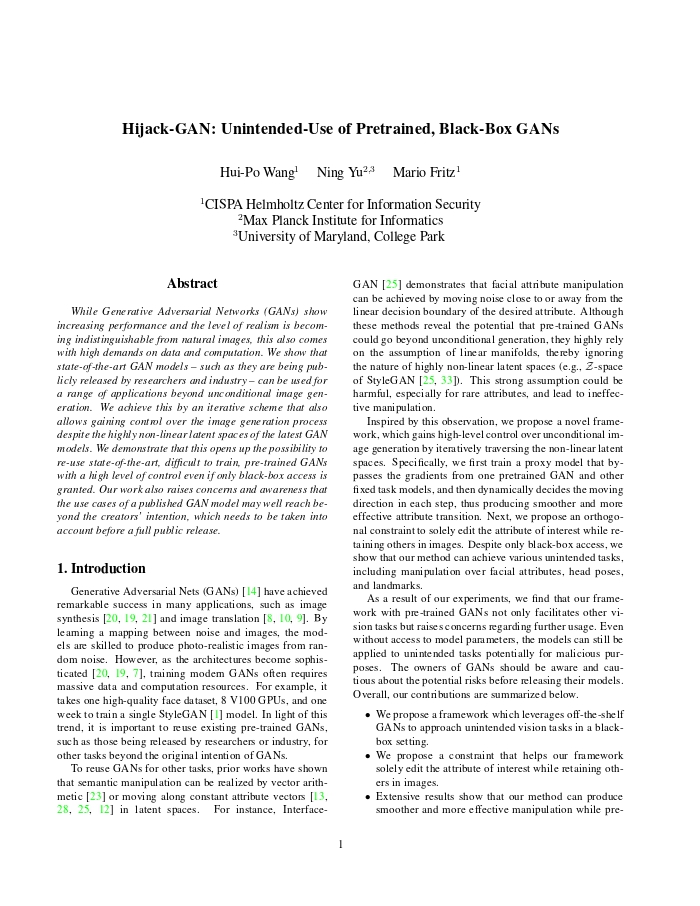
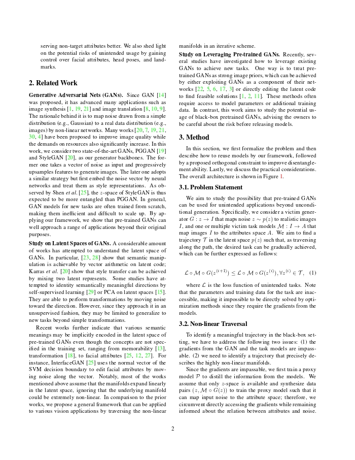
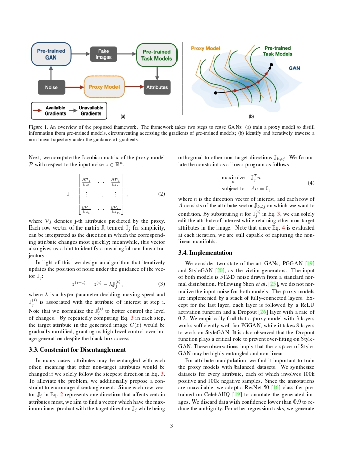
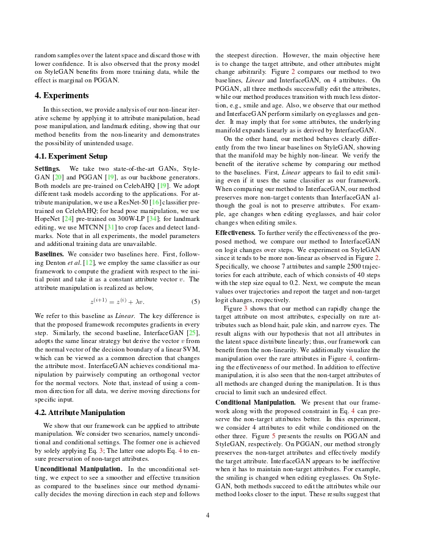
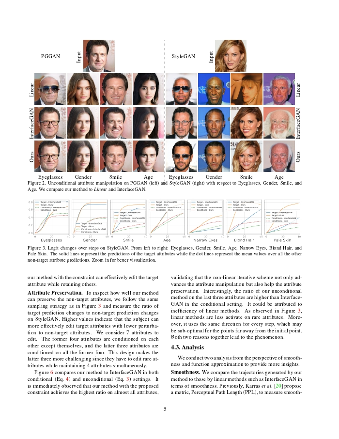
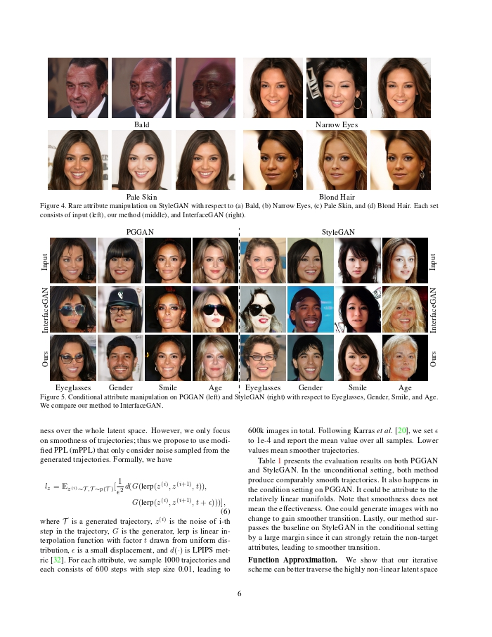
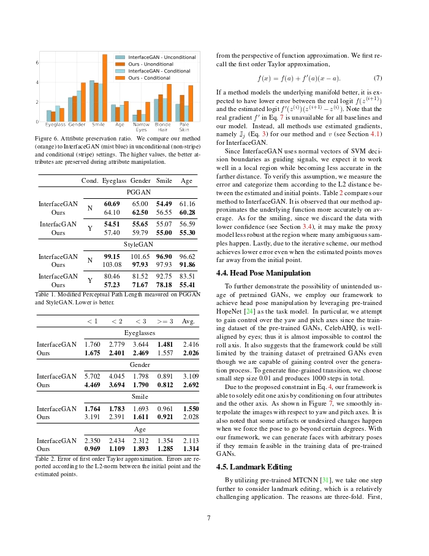
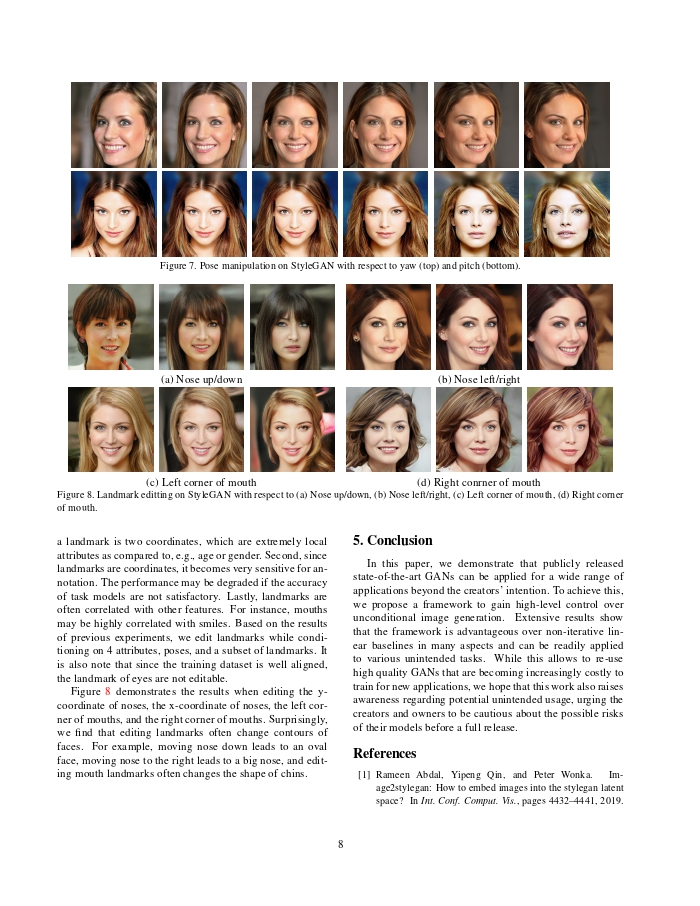
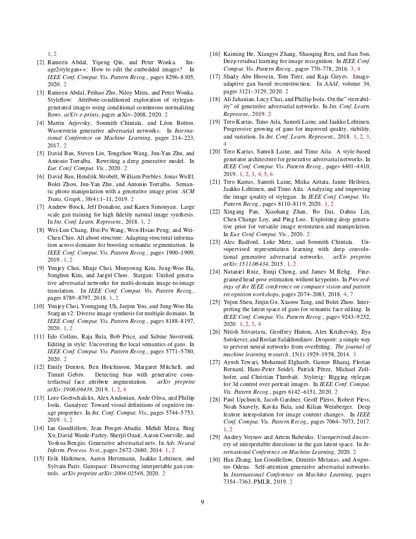
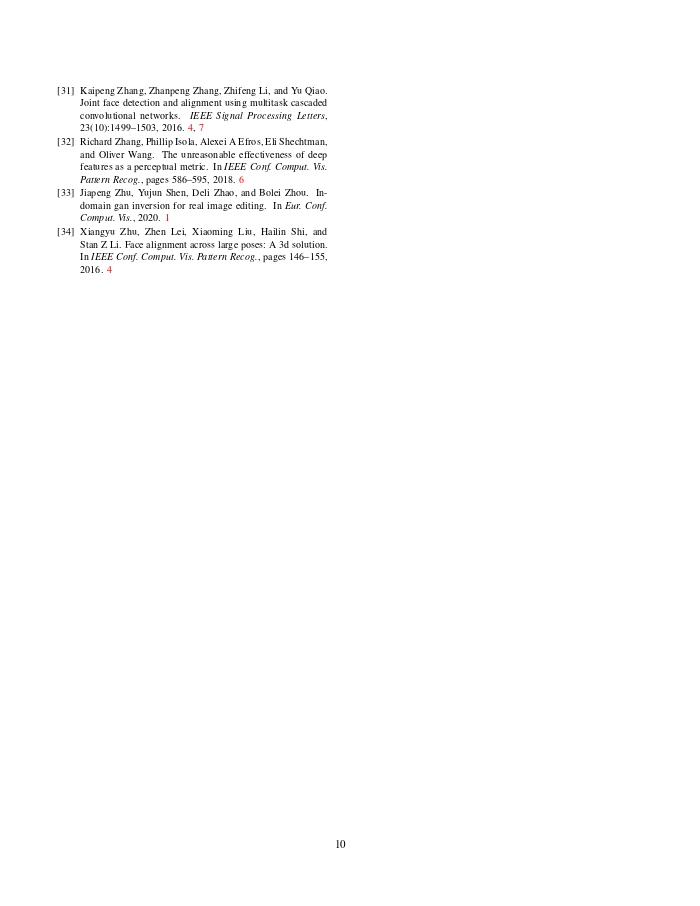
1CISPA Helmholtz Center for Information Security 2Max Planck Institute for Informatics 3University of Maryland, College Park
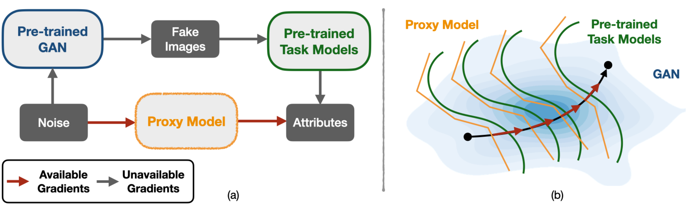
An overview of the proposed framework. The framework takes two steps to reuse GANs: (a) train a proxy model to distill information from pre-trained models, circumventing accessing the gradients of pre-trained models; (b) identify and iteratively traverse a non-linear trajectory under the guidance of gradients.
@inproceedings{wang2021hijack,
title={Hijack-GAN: Unintended-Use of Pretrained, Black-Box GANs},
author={Wang, Hui-Po and Yu, Ning and Fritz, Mario},
booktitle={IEEE Conference on Computer Vision and Pattern Recognition (CVPR)},
year={2021}
}